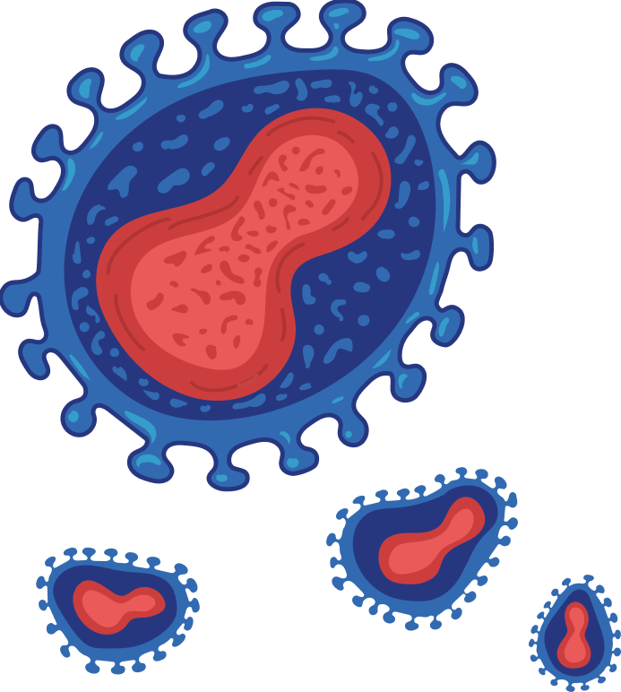
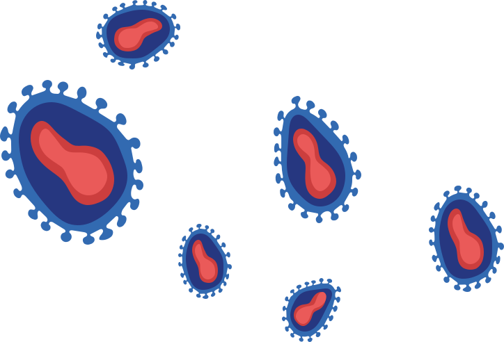
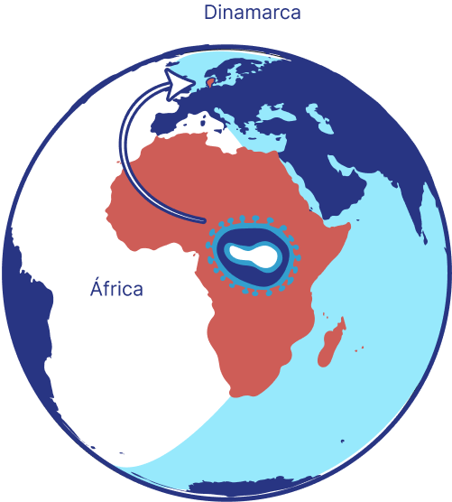
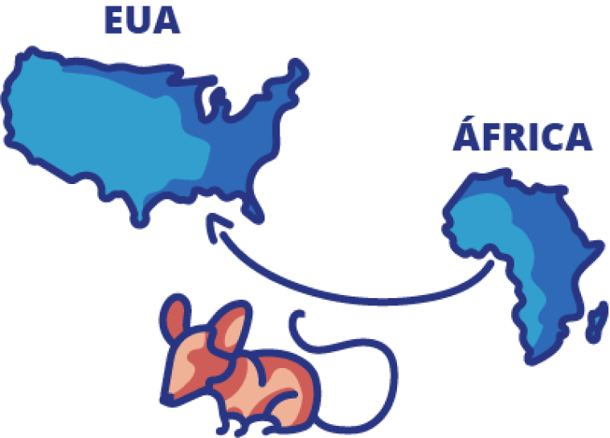

SOBRE O MÓDULO
 Objetivo Geral
Objetivo Geral
Esta Unidade tem como objetivo apresentar um breve histórico e panorama da doença no mundo e no Brasil, descrevendo o agente etiológico, as características do vírus e as formas de transmissão. Ressalta a importância da utilização de dados epidemiológicos para as ações de assistência e vigilância em saúde, o reconhecimento da interface humanos-animais-meio ambiente. Discute ainda os grupos vulneráveis e população-chave.
 Objetivo de Aprendizagem
Objetivo de Aprendizagem
 Carga horária
Carga horária
10 horas

Definição da doença e formas de transmissão
A mpox é uma zoonose viral causada pelo Monkeypox virus (MPXV), da família Poxviridae, capaz de infectar diferentes espécies de mamíferos. É uma doença transmissível, autolimitada e caracterizada pelo surgimento de pústulas na pele dos indivíduos infectados (LUNA et al., 2022).
Nas regiões endêmicas, a taxa de letalidade (TL) varia de 3,6% a 10,6% e, em geral, tanto as manifestações da doença quanto a TL são piores nos pacientes imunossuprimidos, como os pacientes que vivem com o vírus da imunodeficiência humana (HIV) (BUNGE et al., 2022).
Você já deve ter ouvido comentários associando a mpox à varíola humana. Isso se deve ao fato de o agente etiológico das duas doenças, Monkeypox virus e Variola vírus (VARV – do inglês smallpox), pertencerem à mesma família, Poxviridae, causando doenças que se manifestam de forma semelhante clinicamente, embora a mpox seja menos grave.

Outras formas de transmissão entre seres humanos, incluindo por contato sexual, estão sendo estudadas.
O MPXV foi identificado na década de 50, entretanto o primeiro caso em seres humanos foi observado em 1970. Vale ressaltar que embora a descoberta do vírus tenha ocorrido em macacos em um laboratório dinamarquês em 1958, a Organização Mundial da Saúde (OMS) considera inadequada a nomeação dada à doença, esclarecendo que a maioria dos animais suscetíveis a esse tipo de varíola são roedores, como ratos e cães-da-pradaria
LINHA DO TEMPO

1958
O vírus foi identificado em 1958 em duas colônias de macacos provenientes da África e mantidas para pesquisa na Dinamarca.
1970 A 1979
O primeiro caso humano foi identificado em 1970 na República Democrática do Congo, na África. Desde então, apresenta-se como doença endêmica no continente africano, com poucos casos e baixa letalidade. - Entre 1970 e 1979, foram descritos casos humanos nas regiões Central e Ocidental da África.


2003
Em 2003, ocorreu um surto nos EUA. Foram registrados cerca de 47 casos humanos devido à importação de roedores infectados capturados nas florestas de Gana.